Chapter 3. Airport Traffic Control - Terminal
Section 9. Departure Procedures and Separation
3-9-1. DEPARTURE INFORMATION
Provide current departure information, as appropriate, to departing aircraft.
- Departure information contained in the ATIS broadcast may be omitted if the pilot states the appropriate ATIS code.
- Issue departure information by including the following:
- Runway in use. (May be omitted if pilot states “have the numbers.”)
- Surface wind from direct readout dial, wind shear detection system, or automated weather observing system information display. (May be omitted if pilot states “have the numbers.”)
- Altimeter setting. (May be omitted if pilot states “have the numbers.”)
- Time, when requested.
- Issue the official ceiling and visibility, when available, to a departing aircraft before takeoff as follows:
- To a VFR aircraft when weather is below VFR conditions.
- To an IFR aircraft when weather is below VFR conditions or highest takeoff minima, whichever is greater.
- Issue the route for the aircraft/vehicle to follow on the movement area in concise and easy to understand terms. The taxi clearance must include the specific route to follow.
- USAF NOT APPLICABLE. An advisory to “check density altitude” when appropriate.
- Issue braking action for the runway in use as received from pilots when braking action advisories are in effect.
- Runway Condition Codes. Furnish RwyCC, as received from the Airport Operator, to aircraft via the ATIS.
- For opposite direction departure operations, controllers may verbally issue the RwyCC, as identified in the FICON NOTAM, in reverse order. Controllers must not include reversed RwyCC on the ATIS broadcast.
- When the ATIS is unavailable, and when the runway length available for departure has been temporarily shortened, controllers must ensure that pilots receive the runway number combined with a shortened announcement for all departing aircraft.
3-9-2. DEPARTURE DELAY INFORMATION
USA/USAF/USN NOT APPLICABLE
When gate‐hold procedures are in effect, issue the following departure delay information as appropriate:
- Advise departing aircraft the time at which the pilot can expect to receive engine startup advisory.
- Advise departing aircraft when to start engines and/or to advise when ready to taxi.
- If the pilot requests to hold in a delay absorbing area, the request must be approved if space and traffic conditions permit.
- Advise all aircraft on GC/FD frequency upon termination of gate hold procedures.
3-9-3. DEPARTURE CONTROL INSTRUCTIONS
Inform departing IFR, SVFR, VFR aircraft receiving radar service, and TRSA VFR aircraft of the following:
- Before takeoff.
- Issue the appropriate departure control frequency and beacon code. The departure control frequency may be omitted if a SID has been or will be assigned and the departure control frequency is published on the SID.
- Inform all departing IFR military turboprop/turbojet aircraft (except transport and cargo types) to change to departure control frequency. If the local controller has departure frequency override, transmit urgent instructions on this frequency. If the override capability does not exist, transmit urgent instructions on the emergency frequency.
- USAF. USAF control towers are authorized to inform all departing IFR military transport/cargo type aircraft operating in formation flight to change to departure control frequency before takeoff.
- After takeoff.
- When the aircraft is about 1/2 mile beyond the runway end, instruct civil aircraft, and military transport, and cargo types to contact departure control, provided further communication with you is not required.
- Do not request departing military turboprop/turbojet aircraft (except transport and cargo types) to make radio frequency or radar beacon changes before the aircraft reaches 2,500 feet above the surface.
3-9-4. LINE UP AND WAIT (LUAW)
- The intent of LUAW is to position aircraft for an imminent departure. Authorize an aircraft to line up and wait, except as restricted in subparagraph g, when takeoff clearances cannot be issued because of traffic. Issue traffic information to any aircraft so authorized. Traffic information may be omitted when the traffic is another aircraft which has landed on or is taking off the runway and is clearly visible to the holding aircraft. Do not use conditional phrases such as “behind landing traffic” or “after the departing aircraft.”
- First state the runway number followed by the line up and wait clearance.
- Procedures.
- At facilities without a safety logic system or facilities with the safety logic system in limited configuration:
- Do not clear an aircraft for a full‐stop, touch‐and‐go, stop‐and‐go, low approach, or option on the same runway with an aircraft holding in position or taxiing to LUAW until the aircraft in position has exited the runway or starts takeoff roll.
- Do not authorize an aircraft to LUAW if an aircraft has been cleared for a full‐stop, touch‐and‐go, stop‐and‐go, low approach, or option on the same runway.
- Except when reported weather conditions are less than ceiling 800 feet or visibility less than 2 miles, facilities using the safety logic system in the full core alert mode:
- May issue clearance for a full‐stop, touch‐and‐go, stop‐and‐go, low approach, or option on the same runway with an aircraft holding in position or taxiing to LUAW, or
- May authorize an aircraft to LUAW when an aircraft has been cleared for a full‐stop, touch‐and‐go, stop‐and‐go, low approach, or option on the same runway.
- At facilities without a safety logic system or facilities with the safety logic system in limited configuration:
- When an aircraft is authorized to LUAW, inform it of the closest traffic within 6 flying miles requesting a full‐stop, touch‐and‐go, stop‐and‐go, low approach, or option to the same runway.
- Do not authorize an aircraft to line up and wait when the departure point is not visible from the tower, unless the aircraft's position can be verified by ASDE or the runway is used for departures only.
- An aircraft may be authorized to line up and wait at an intersection between sunset and sunrise under the following conditions:
- The procedure must be approved by the appropriate Service Area Director of Air Traffic Operations.
- The procedure must be contained in a facility directive.
- The runway must be used as a departure-only runway.
- Only one aircraft at a time is permitted to line up and wait on the same runway.
- Document on FAA Form 7230-4, Daily Record of Facility Operation, the following: “LUAW at INT of RWY (number) and TWY (name) IN EFFECT” when using runway as a departure-only runway. “LUAW at INT of RWY (number) and TWY (name) SUSPENDED” when runway is not used as a departure-only runway.
- Do not authorize an aircraft to line up and wait at anytime when the intersection is not visible from the tower.
- Do not authorize aircraft to simultaneously line up and wait on the same runway, between sunrise and sunset, unless the local assist/local monitor position is staffed.
- USN. Do not authorize aircraft to line up and wait simultaneously on intersecting runways.
- When aircraft are authorized to line up and wait on runways that intersect, traffic must be exchanged between that aircraft and the aircraft that is authorized to line up and wait, depart, or arrive to the intersecting runway(s).
- When a local controller delivers or amends an ATC clearance to an aircraft awaiting departure and that aircraft is holding short of a runway or is holding in position on a runway, an additional clearance must be issued to prevent the possibility of the aircraft inadvertently taxiing onto the runway and/or beginning takeoff roll. In such cases, append one of the following ATC instructions as appropriate:
- HOLD SHORT OF RUNWAY, or
- HOLD IN POSITION.
- USAF/USN. When issuing additional instructions or information to an aircraft holding in position, include instructions to continue holding or taxi off the runway, unless it is cleared for takeoff.
- When authorizing an aircraft to line up and wait at an intersection, state the runway intersection.
- When two or more aircraft call the tower ready for departure, one or more at the full length of a runway and one or more at an intersection, state the location of the aircraft at the full length of the runway when authorizing that aircraft to line up and wait.
- Do not use the term “full length” when the runway length available for departure has been temporarily shortened. On permanently shortened runways, do not use the term “full length” until the Chart Supplement is updated to include the change(s).
- Whenever a runway length has been temporarily or permanently shortened, state the word “shortened” immediately following the runway number as part of the line up and wait clearance.
- The addition of “shortened” must be included in the line up and wait clearance for the duration of the construction project when the runway is temporarily shortened.
- The addition of “shortened” must be included in the line up and wait clearance until the Chart Supplement is updated to include the change(s) when the runway is permanently shortened.
3-9-5. ANTICIPATING SEPARATION
Takeoff clearance need not be withheld until prescribed separation exists if there is a reasonable assurance it will exist when the aircraft starts takeoff roll.
3-9-6. SAME RUNWAY SEPARATION
Separate a departing aircraft from a preceding departing or arriving aircraft using the same runway by ensuring that it does not begin takeoff roll until:
- The other aircraft has departed and crossed the runway end or turned to avert any conflict. (See FIG 3-9-1.) If you can determine distances by reference to suitable landmarks, the other aircraft needs only be airborne if the following minimum distance exists between aircraft: (See FIG 3-9-2.)
- When only Category I aircraft are involved- 3,000 feet.
- When a Category I aircraft is preceded by a Category II aircraft- 3,000 feet.
- When either the succeeding or both are Category II aircraft- 4,500 feet.
- When either is a Category III aircraft- 6,000 feet.
- When the succeeding aircraft is a helicopter or powered‐lift aircraft, visual separation may be applied in lieu of using distance minima.
FIG 3-9-1Same Runway Separation 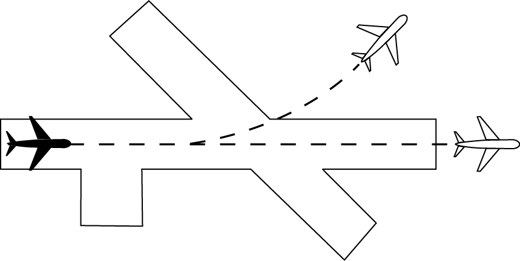
FIG 3-9-2Same Runway Separation 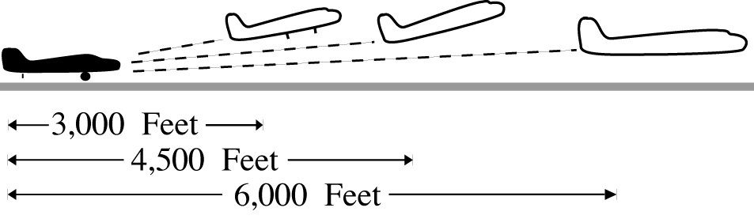
- A preceding landing aircraft is clear of the runway. (See FIG 3-9-3.)
FIG 3-9-3Preceding Landing Aircraft Clear of Runway 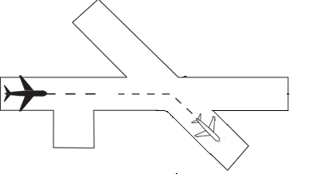
WAKE TURBULENCE APPLICATION
- Do not issue clearances which imply or indicate approval of rolling takeoffs by super or heavy aircraft except as provided in paragraph 3-1-14, Ground Operations When Volcanic Ash is Present.
- Do not issue clearances to a small aircraft to line up and wait on the same runway behind a departing super or heavy aircraft to apply the necessary intervals.
- The minima in paragraph 5-5-4, Minima, subparagraph g and TBL 5-5-1, may be applied in lieu of the time interval requirements in subparagraphs f, g, and h. When paragraph 5-5-4, TBL 5-5-1, is applied, ensure that the appropriate radar separation exists at or prior to the time an aircraft becomes airborne.
- Separate aircraft taking off from the same runway or a parallel runway separated by less than 2,500 feet (see FIG 3-9-4):
- Category B, C, D, E, F, G, H, or I aircraft behind Category A aircraft – 3 minutes.
- Category B, C, D, E, F, G, H, or I aircraft behind Category B or D aircraft – 2 minutes.
- Category E, F, G, H, or I aircraft behind Category C aircraft – 2 minutes.
FIG 3-9-4Same Runway Separation 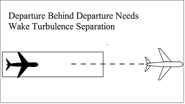
- Separate a Category I aircraft behind a Category E aircraft by 2 minutes when departing:
- The same runway or a parallel runway separated by less than 700 feet. (See FIG 3-9-5 and FIG 3-9-6.)
FIG 3-9-5Same Runway Separation 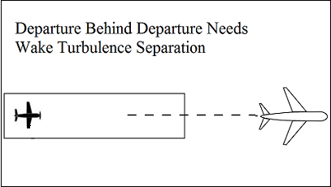
FIG 3-9-6Parallel Runway Separated by Less than 700 Feet 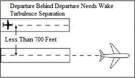
- A parallel runway separated by 700 feet or more if projected flight paths will cross. (See FIG 3-9-7).
FIG 3-9-7Parallel Runway Separated by 700 Feet or More 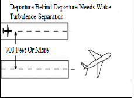
- The same runway or a parallel runway separated by less than 700 feet. (See FIG 3-9-5 and FIG 3-9-6.)
- Separate aircraft departing from a parallel runway separated by 2,500 feet or more if projected flight paths will cross (See FIG 3-9-8):
- Category B, C, D, E, F, G, H, or I aircraft behind Category A aircraft – 3 minutes.
- Category B, C, D, E, F, G, H, or I aircraft behind Category B or D aircraft – 2 minutes.
- Category E, F, G, H, or I aircraft behind Category C aircraft – 2 minutes.
FIG 3-9-8Parallel Runways Separated by 2,500 feet or More 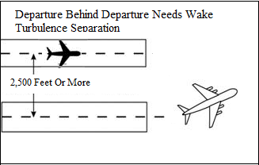
- Separate aircraft when operating on a runway with a displaced landing threshold if projected flight paths will cross when either a departure follows an arrival or an arrival follows a departure by the following minima:
- Category B, C, D, E, F, G, H, or I aircraft behind Category A aircraft – 3 minutes.
- Category B, C, D, E, F, G, H, or I aircraft behind Category B or D aircraft – 2 minutes.
- Category E, F, G, H, or I aircraft behind Category C aircraft – 2 minutes.
- Category I aircraft behind Category E aircraft – 2 minutes.
- Separate an aircraft behind another aircraft that has departed or made a low/missed approach when utilizing opposite direction takeoffs or landings on the same or parallel runways separated by less than 2,500 feet by the following minima:
- Category B, C, D, E, F, G, H, or I aircraft behind Category A aircraft – 4 minutes.
- Category B, C, D, E, F, G, H, or I aircraft behind Category B or D aircraft – 3 minutes.
- Category E, F, G, H, or I aircraft behind Category C aircraft – 3 minutes.
- Separate a Category I aircraft behind a Category E aircraft that has departed or made a low/missed approach by 3 minutes when utilizing opposite direction takeoffs or landings from:
- The same runway or a parallel runway separated by less than 700 feet.
- A parallel runway separated by 700 feet or more if projected flight paths will cross.
- Do not approve pilot requests to deviate from the required intervals contained in subparagraphs f through k.
- Separate a Category I aircraft behind a Category F or G aircraft that has departed or made a low/missed approach when utilizing opposite direction takeoffs on the same runway by 3 minutes unless a pilot has initiated a request to deviate from the time interval. In the latter case, issue a wake turbulence cautionary advisory before clearing the aircraft for takeoff. Controllers must not initiate or suggest a waiver of the time interval.
- Inform aircraft when it is necessary to hold in order to provide the required time interval.
3-9-7. WAKE TURBULENCE SEPARATION FOR INTERSECTION DEPARTURES
- Apply the following wake turbulence criteria for intersection departures:
- Separate a Category I aircraft taking off from an intersection on the same runway (same or opposite direction takeoff) behind a departing Category F, G, or H aircraft by ensuring that the aircraft does not start takeoff roll until at least 3 minutes after the preceding aircraft has taken off.
- Separate a Category I aircraft taking off from an intersection on the same runway (same or opposite direction takeoff) behind a departing Category E aircraft by ensuring that the aircraft does not start takeoff roll until at least 3 minutes after the Category E aircraft has taken off from:
- The same runway or a parallel runway separated by less than 700 feet.
- Parallel runways separated by 700 feet or more, or parallel runways separated by 700 feet or more with the runway thresholds offset by 500 feet or more, if projected flight paths will cross.
- Separate aircraft departing from an intersection on the same runway (same or opposite direction takeoff), parallel runways separated by less than 2,500 feet, and parallel runways separated by less than 2,500 feet with the runway thresholds offset by 500 feet or more, by ensuring that the aircraft does not start take‐off roll until the following intervals exist after the preceding aircraft has taken off:
- Category B, C, D, E, F, G, H, or I aircraft behind Category A aircraft - 4 minutes.
- Category B, C, D, E, F, G, H, or I aircraft behind Category B or D aircraft -3 minutes.
- Category E, F, G, H, or I aircraft behind Category C aircraft – 3 minutes.
- Inform aircraft when it is necessary to hold in order to provide the required time interval.
- The time interval is not required when:
- A pilot has initiated a request to deviate from the time intervals contained in subparagraph a1.
- USA NOT APPLICABLE. The intersection is 500 feet or less from the departure point of the preceding aircraft and both aircraft are taking off in the same direction.
- Successive touch‐and‐go or stop‐and‐go operations are conducted with any aircraft following an aircraft in the pattern that requires wake turbulence separation, or an aircraft departing the same runway that requires wake turbulence separation in accordance with subparagraphs a1, a2, or a3 (except for Category A aircraft), provided the pilot is maintaining visual separation/spacing behind the preceding aircraft. Issue a wake turbulence cautionary advisory and the position of the larger aircraft.
- If action is initiated to reduce the separation between successive touch-and-go or stop-and-go operations, apply the appropriate separation contained in subparagraph a1, a2, a3, or a4.
- When applying the provision of subparagraph b:
- Issue a wake turbulence advisory before clearing the aircraft for takeoff.
- Do not clear the intersection departure for an immediate takeoff.
- Issue a clearance to permit the trailing aircraft to deviate from course enough to avoid the flight path of the preceding aircraft when applying subparagraph b1 or b2.
- Separation requirements in accordance with paragraph 3-9-6, Same Runway Separation, must also apply.
3-9-8. INTERSECTING RUNWAY/INTERSECTING FLIGHT PATH OPERATIONS
- Issue traffic information to each aircraft operating on intersecting runways.
- Separate departing aircraft from another aircraft using an intersecting runway by ensuring that the departure does not begin takeoff roll until one of the following exists:
- The preceding aircraft has departed and passed the intersection or is turning to avert any conflict. (See FIG 3-9-9).
FIG 3-9-9Intersecting Runway Separation 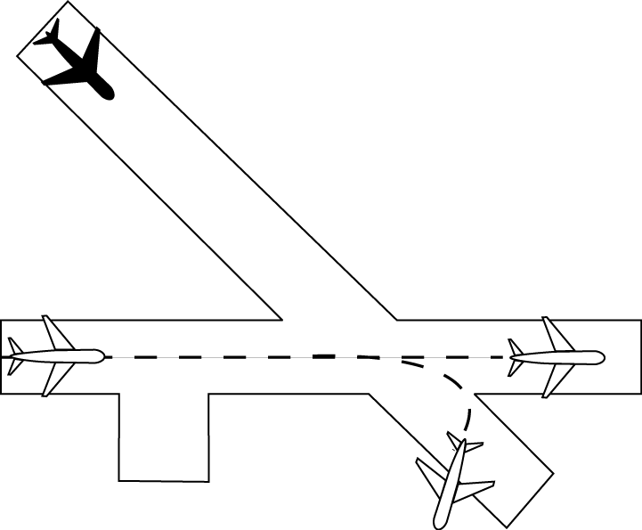
- A preceding arriving aircraft (See FIG 3-9-10).
- Is clear of the landing runway, or
- Has completed landing roll and acknowledged the instruction to hold short of the intersection, or
- Has completed landing roll and acknowledged the instruction to exit the runway prior to intersection, or
- Has completed landing roll and is observed turning at an exit point prior to the intersection, or
- Has passed the intersection.
FIG 3-9-10Intersecting Runway Separation 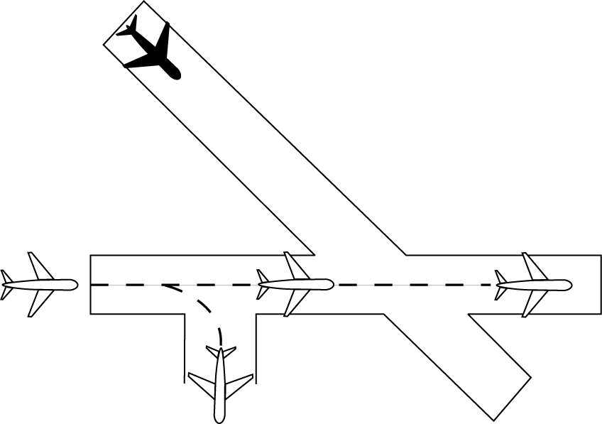
- USA/USAF/USN NOT APPLICABLE. An arriving aircraft has acknowledged a clearance to land and hold short of the intersecting runway/intersecting flight path being used by a departing aircraft in accordance with FAA Order JO 7110.118, Land and Hold Short Operations (LAHSO). (See FIG 3-9-11.)
FIG 3-9-11Intersecting Runway Separation 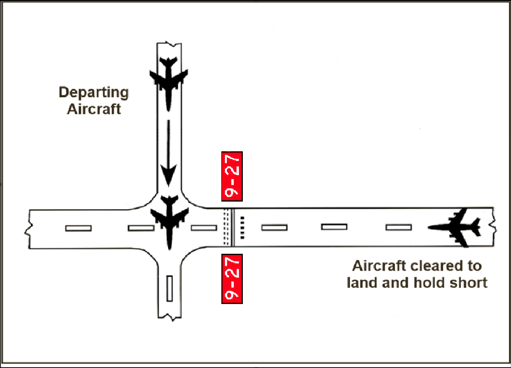
WAKE TURBULENCE APPLICATION
- Separate aircraft taking off behind a departing or landing aircraft on an intersecting runway if flight paths will cross (see FIG 3-9-12 and FIG 3-9-13):
- Category B, C, D, E, F, G, H, or I aircraft behind Category A aircraft – 3 minutes.
- Category B, C, D, E, F, G, H, or I aircraft behind Category B or D aircraft – 2 minutes.
- Category E, F, G, H, or I aircraft behind Category C aircraft – 2 minutes.
- Category I aircraft behind Category E aircraft – 2 minutes.
FIG 3-9-12Departure Behind Departure on Intersecting Runway 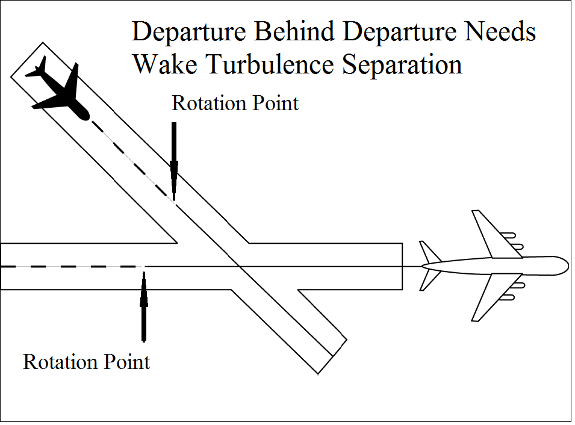
FIG 3-9-13Departure Behind Arrival on Intersecting Runway 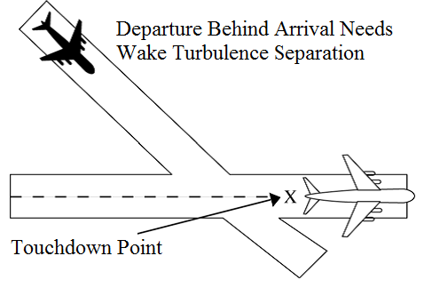
- Pilot requests to deviate from the required time intervals must not be approved if the preceding aircraft requires wake turbulence separation.
- The preceding aircraft has departed and passed the intersection or is turning to avert any conflict. (See FIG 3-9-9).
3-9-9. NONINTERSECTING CONVERGING RUNWAY OPERATIONS
- Separate departing aircraft from an aircraft using a nonintersecting runway when the flight paths intersect by ensuring that the departure does not begin takeoff roll until one of the following exists:
- The preceding aircraft has departed and crossed the departure runway, or is turning to avert any conflict (see FIG 3-9-14).
FIG 3-9-14Converging Runway Separation 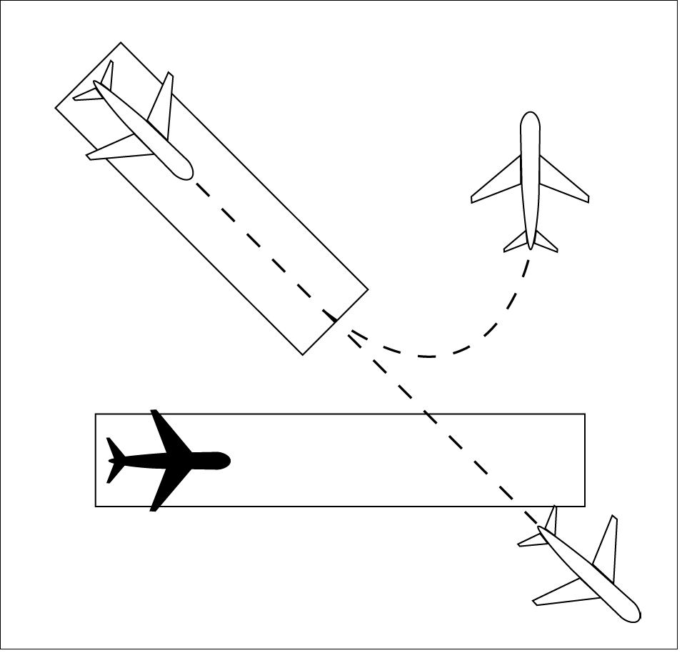
- A preceding arriving aircraft has completed the landing roll and will hold short of the projected intersection, passed the projected intersection, or has crossed over the departure runway (see FIG 3-9-15 and FIG 3-9-16).
FIG 3-9-15Converging Runway Separation 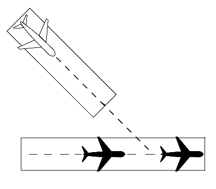
FIG 3-9-16Converging Runway Separation 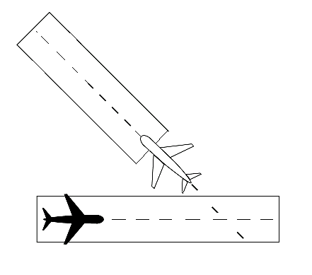
- The preceding aircraft has departed and crossed the departure runway, or is turning to avert any conflict (see FIG 3-9-14).
- If the extended centerline of a runway crosses a converging runway or the extended centerline of a converging runway at a distance of 1 NM or less from either departure end, apply the provisions of paragraph 3-9-8, Intersecting Runway/ Intersecting Flight Path Operations, unless the facility is using aids specified in a facility directive, (may include but are not limited to, Arrival/Departure Window (ADW), ASDE-X Virtual Runway Intersection Point (VRIP), cut‐off points or automation). (See FIG 3-9-17 and FIG 3-9-18.)
FIG 3-9-17Converging Runway Separation 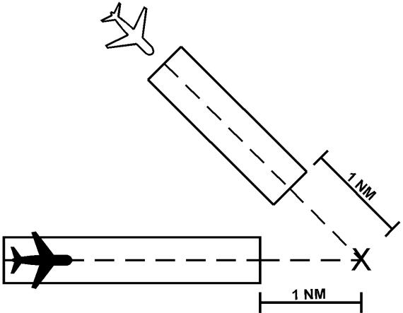
FIG 3-9-18Converging Runway Separation 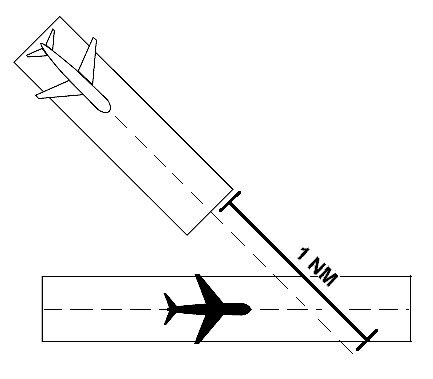
WAKE TURBULENCE APPLICATION
- Separate aircraft taking off behind a landing or departing aircraft on a converging runway if projected flight paths will cross (See FIG 3-9-19 and FIG 3-9-20):
- Category B, C, D, E, F, G, H, or I aircraft behind Category A aircraft – 3 minutes.
- Category B, C, D, E, F, G, H, or I aircraft behind Category B or D aircraft – 2 minutes.
- Category E, F, G, H, or I aircraft behind Category C aircraft – 2 minutes.
- Category I aircraft behind Category E aircraft – 2 minutes.
FIG 3-9-19Converging Runway Separation 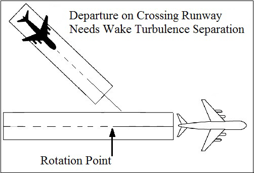
FIG 3-9-20Converging Runway Separation 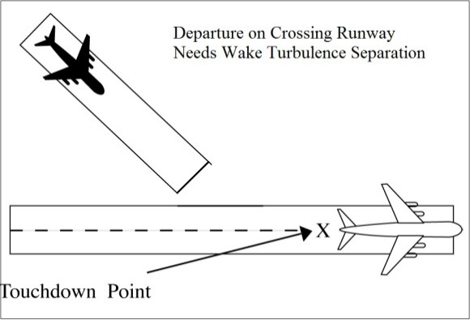
- Do not approvepilot requests to deviate from the required time interval if the preceding aircraft requires wake turbulence separation.
3-9-10. TAKEOFF CLEARANCE
- When issuing a clearance for takeoff, first state the runway number followed by the takeoff clearance.
- When clearing an aircraft for takeoff from an intersection, state the runway intersection.
- When two or more aircraft call the tower ready for departure, one or more at the full length of a runway and one or more at an intersection, state the location of the aircraft at the full length of the runway when clearing that aircraft for takeoff.
- The controller must ensure that all runways along the taxi route that lead to the departure runway are crossed before the takeoff clearance is issued, except as stated in paragraph 3-9-10e.
FIG 3-9-21Runway/Taxiway Proximity 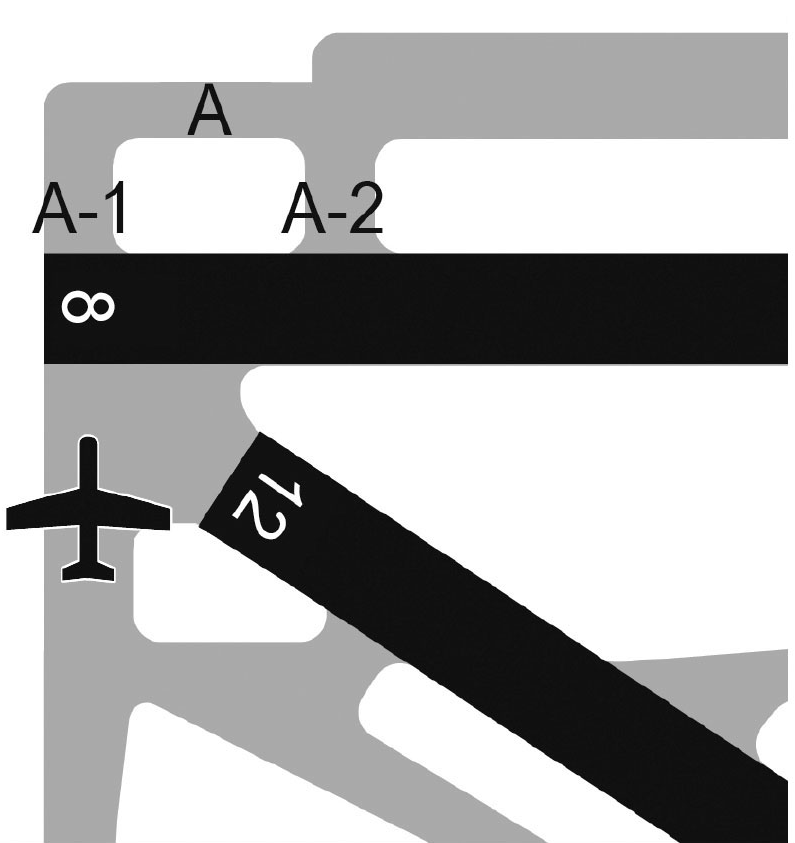
- At those airports where the airport configuration does not allow for an aircraft to completely cross one runway and hold short of the departure runway and/or where airports do not have runway hold markings between runways, state the runway to be crossed with the takeoff clearance if the aircraft is not able to complete a runway crossing before reaching its departure runway.
FIG 3-9-22Runway/Taxiway Proximity 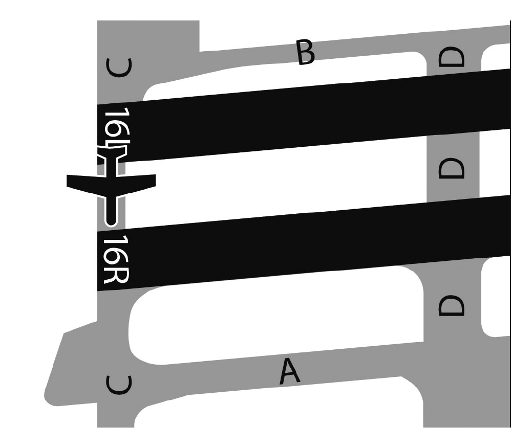
- Do not use the term “full length” when the runway length available for departure has been temporarily shortened. On permanently shortened runways, do not use the term “full length” until the Chart Supplement is updated to include the change(s).
- Whenever a runway length has been temporarily or permanently shortened, state the word “shortened” immediately following the runway number as part of the takeoff clearance. This information must be issued in conjunction with the takeoff clearance.
- The addition of “shortened” must be included in the takeoff clearance for the duration of the construction project when the runway is temporarily shortened.
- The addition of “shortened” must be included in the takeoff clearance until the Chart Supplement is updated to include the change(s) when the runway is permanently shortened.
- USAF. When an aircraft is cleared for takeoff, inform it of the closest traffic within 6 miles on final approach to the same runway. If the approaching aircraft is on a different frequency, inform it of the departing aircraft.
- USA/USN/USAF. Issue surface wind and takeoff clearance to aircraft.
3-9-11. CANCELLATION OF TAKEOFF CLEARANCE
Cancel a previously issued clearance for takeoff and inform the pilot of the reason if circumstances require. Once an aircraft has started takeoff roll, cancel the takeoff clearance only for the purpose of safety.